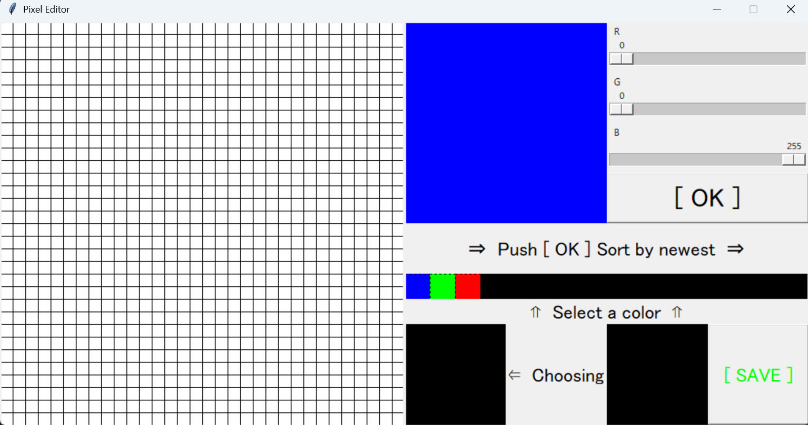
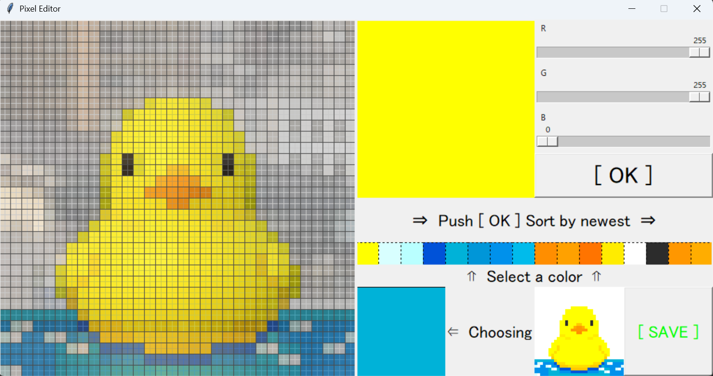
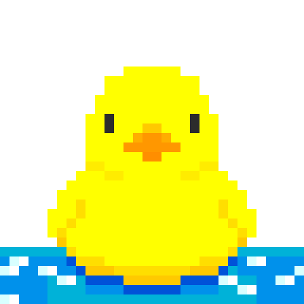

SOFTWARE

Python / Tkinter
プログラミングを学び始めて最初に制作したソフトウェア。

右上のRGBに対応した各スライダーで色を作り「OK」を押下することで「Select a color」に保存、最大16色まで保持可能。エディターの左側に作り出した色から絵を描いていく。

「Select a color」にある色を選択すると「Choosing」に反映され、その状態で左の32x32のマスをタップすると、選択した色が反映される。また左側には下絵として写真を挿入できる。

右下の「SAVE」を押すと画像として保存が可能。
NEXT